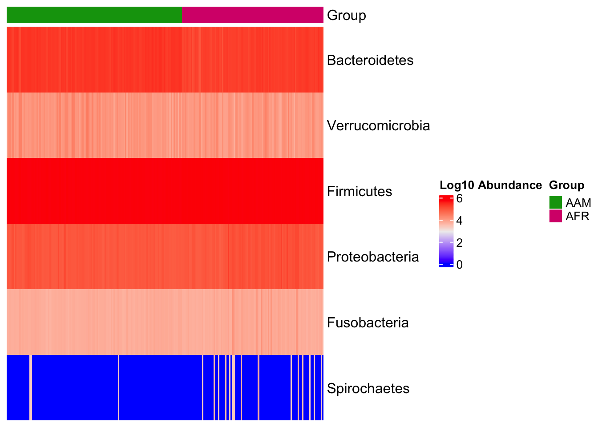
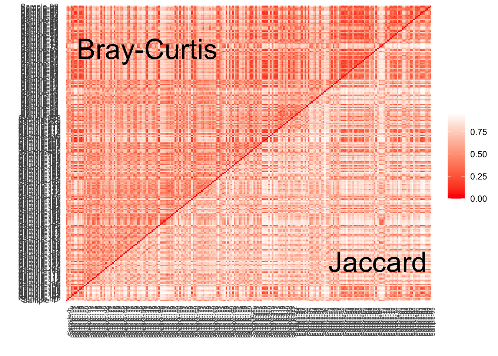

8 Exploration of processded data
8.1 Import data
## ── Attaching core tidyverse packages ──────────────────────── tidyverse 2.0.0 ──
## ✔ dplyr 1.1.4 ✔ readr 2.1.5
## ✔ forcats 1.0.0 ✔ stringr 1.5.1
## ✔ ggplot2 3.4.4 ✔ tibble 3.2.1
## ✔ lubridate 1.9.3 ✔ tidyr 1.3.1
## ✔ purrr 1.0.2
## ── Conflicts ────────────────────────────────────────── tidyverse_conflicts() ──
## ✖ dplyr::filter() masks stats::filter()
## ✖ dplyr::lag() masks stats::lag()
## ℹ Use the conflicted package (<http://conflicted.r-lib.org/>) to force all conflicts to become errors##
## microbiome R package (microbiome.github.com)
##
##
##
## Copyright (C) 2011-2022 Leo Lahti,
## Sudarshan Shetty et al. <microbiome.github.io>
##
##
## Attaching package: 'microbiome'
##
## The following object is masked from 'package:ggplot2':
##
## alpha
##
## The following object is masked from 'package:base':
##
## transform## Registered S3 method overwritten by 'gplots':
## method from
## reorder.factor DescTools
##
## Attaching package: 'microbiomeMarker'
##
## The following objects are masked from 'package:microbiome':
##
## abundances, aggregate_taxa
##
## The following object is masked from 'package:phyloseq':
##
## plot_heatmap
load("../imap-data-preparation/data/external/external_ps_objects.rda", verbose = TRUE)## Loading objects:
## df_GlobalPatterns
## df_ibd_phylo
## df_dietswap
## df_caporaso
## df_kostic_crc
## ps_GlobalPatterns
## ps_ibd_phylo
## ps_dietswap
## ps_caporaso
## ps_kostic_crc
load("../imap-data-preparation/data/mothur/mothur_phyloseq_objects.rda", verbose = TRUE)## Loading objects:
## mtps_metadata
## mtps_otutable
## mtps_taxonomy
## mtps_phylotree
## ps_tree
## ps_raw
## ps_rel
load("../imap-data-preparation/data/qiime2/qiime2_phyloseq_objects.rda", verbose = TRUE)## Loading objects:
## ps_tree
## ps_raw
## ps_rel
## ps_df_raw
## ps_df_rel
8.2 Dataset: ps_GlobalPatterns
ps_GlobalPatterns## phyloseq-class experiment-level object
## otu_table() OTU Table: [ 19216 taxa and 26 samples ]
## sample_data() Sample Data: [ 26 samples by 7 sample variables ]
## tax_table() Taxonomy Table: [ 19216 taxa by 7 taxonomic ranks ]
## phy_tree() Phylogenetic Tree: [ 19216 tips and 19215 internal nodes ]
cat("\nSample Variables\n")##
## Sample Variables
sample_variables(ps_GlobalPatterns)## [1] "X.SampleID" "Primer"
## [3] "Final_Barcode" "Barcode_truncated_plus_T"
## [5] "Barcode_full_length" "SampleType"
## [7] "Description"
cat("\nNumber of levels in selected group\n")##
## Number of levels in selected group
1:length(unique(sample_data(ps_GlobalPatterns)$SampleType))## [1] 1 2 3 4 5 6 7 8 9
8.3 Dataset: ps_ibd_phylo
ps_ibd_phylo## phyloseq-class experiment-level object
## otu_table() OTU Table: [ 36349 taxa and 91 samples ]
## sample_data() Sample Data: [ 91 samples by 15 sample variables ]
## tax_table() Taxonomy Table: [ 36349 taxa by 7 taxonomic ranks ]
cat("\nSample Variables\n")##
## Sample Variables
sample_variables(ps_ibd_phylo)## [1] "sample" "gender" "age" "DiseaseState" "steroids"
## [6] "imsp" "abx" "mesalamine" "ibd" "activity"
## [11] "active" "race" "fhx" "imspLEVEL" "SampleType"
cat("\nNumber of levels in selected group\n")##
## Number of levels in selected group
1:length(unique(sample_data(ps_ibd_phylo)$DiseaseState))## [1] 1 2 3 4
library(microViz)
ps_ibd_phylo %>%
tax_fix() %>%
comp_barplot(
tax_level = "Genus", n_taxa = 15, other_name = "Other",
taxon_renamer = function(x) stringr::str_remove(x, " [ae]t rel."),
palette = distinct_palette(n = 15, add = "grey90"),
merge_other = FALSE, bar_outline_colour = "darkgrey"
) +
coord_flip() +
labs(x = NULL, y = NULL) +
theme(axis.text.y = element_blank(), axis.ticks.y = element_blank())
8.4 Dataset: ps_dietswap
ps_dietswap## phyloseq-class experiment-level object
## otu_table() OTU Table: [ 130 taxa and 222 samples ]
## sample_data() Sample Data: [ 222 samples by 8 sample variables ]
## tax_table() Taxonomy Table: [ 130 taxa by 3 taxonomic ranks ]
cat("\nSample Variables\n")##
## Sample Variables
sample_variables(ps_dietswap)## [1] "subject" "sex" "nationality"
## [4] "group" "sample" "timepoint"
## [7] "timepoint.within.group" "bmi_group"
cat("\nNumber of levels in nationality\n")##
## Number of levels in nationality
1:length(unique(sample_data(ps_dietswap)$nationality))## [1] 1 2
cat("\nNumber of levels in group\n")##
## Number of levels in group
1:length(unique(sample_data(ps_dietswap)$group))## [1] 1 2 3
run_lefse(
ps_dietswap,
wilcoxon_cutoff = 0.001,
group = "nationality",
taxa_rank = "Phylum",
transform = "log10",
kw_cutoff = 0.01,
multigrp_strat = TRUE,
lda_cutoff = 2) %>%
plot_heatmap(group = "nationality", color = "rainbow, 1:length(unique(df_dietswap$nationality))")## Warning in transform_log10(otu): OTU table contains zeroes. Using log10(1 + x)
## instead.
## Warning in transform_log10(otu): OTU table contains zeroes. Using log10(1 + x)
## instead.
library(microViz)
ps_dietswap %>%
comp_barplot(
tax_level = "Genus", n_taxa = 15, other_name = "Other",
taxon_renamer = function(x) stringr::str_remove(x, " [ae]t rel."),
palette = distinct_palette(n = 15, add = "grey90"),
merge_other = FALSE, bar_outline_colour = "darkgrey"
) +
coord_flip() +
facet_wrap("nationality", nrow = 1, scales = "free") +
labs(x = NULL, y = NULL) +
theme(axis.text.y = element_blank(), axis.ticks.y = element_blank())
# ## Recoding values in phyloseq object
# data("dietswap", package = "microbiome")
#
# # create a couple of numerical variables to use as constraints or conditions
# dietswap <- dietswap %>%
# ps_mutate(
# weight = recode(bmi_group, obese = 3, overweight = 2, lean = 1),
# female = if_else(sex == "female", true = 1, false = 0),
# african = if_else(nationality == "AFR", true = 1, false = 0)
# )
# # add a couple of missing values to show how microViz handles missing data
# sample_data(dietswap)$african[c(3, 4)] <- NA
8.5 Dataset: ps_caporaso
ps_caporaso## phyloseq-class experiment-level object
## otu_table() OTU Table: [ 3426 taxa and 34 samples ]
## sample_data() Sample Data: [ 34 samples by 8 sample variables ]
## tax_table() Taxonomy Table: [ 3426 taxa by 7 taxonomic ranks ]
## phy_tree() Phylogenetic Tree: [ 3426 tips and 3424 internal nodes ]
cat("\nSample Variables\n")##
## Sample Variables
sample_variables(ps_caporaso)## [1] "SampleType" "Year"
## [3] "Month" "Day"
## [5] "Subject" "ReportedAntibioticUsage"
## [7] "DaysSinceExperimentStart" "Description"
cat("\nNumber of levels in selected group\n")##
## Number of levels in selected group## [1] 1 2 3 4
ps_caporaso <- ps_caporaso %>% tax_fix()
run_lefse(
ps_caporaso,
wilcoxon_cutoff = 0.001,
group = "SampleType",
taxa_rank = "Class",
transform = "log10p",
kw_cutoff = 0.01,
multigrp_strat = TRUE,
lda_cutoff = 2) %>%
plot_heatmap(group = "SampleType", color = c("green", "red", "grey", "magenta", "orange", "pink", "yellow"))
library(microViz)
ps_caporaso %>%
tax_fix() %>%
comp_barplot(
tax_level = "Genus", n_taxa = 15, other_name = "Other",
taxon_renamer = function(x) stringr::str_remove(x, " [ae]t rel."),
palette = distinct_palette(n = 15, add = "grey90"),
merge_other = FALSE, bar_outline_colour = "darkgrey"
) +
coord_flip() +
facet_wrap("SampleType", nrow = 1, scales = "free") +
labs(x = NULL, y = NULL) +
theme(axis.text.y = element_blank(), axis.ticks.y = element_blank())
data("caporaso")
caporaso_small <- phyloseq::subset_taxa(
caporaso,
Phylum %in% c("p__Firmicutes")
)
mm_lefse <- run_lefse(
caporaso_small,
wilcoxon_cutoff = 0.0001,
group = "SampleType",
kw_cutoff = 0.01,
multigrp_strat = TRUE,
lda_cutoff = 4
)
plot_cladogram(mm_lefse, color = c("green", "red", "magenta", "yellow"))
8.6 Dataset: ps_kostic_crc
ps_kostic_crc## phyloseq-class experiment-level object
## otu_table() OTU Table: [ 2505 taxa and 177 samples ]
## sample_data() Sample Data: [ 177 samples by 71 sample variables ]
## tax_table() Taxonomy Table: [ 2505 taxa by 7 taxonomic ranks ]
cat("\nSample Variables\n")##
## Sample Variables
sample_variables(ps_kostic_crc)## [1] "X.SampleID" "BarcodeSequence"
## [3] "LinkerPrimerSequence" "NECROSIS_PERCENT"
## [5] "TARGET_SUBFRAGMENT" "ASSIGNED_FROM_GEO"
## [7] "EXPERIMENT_CENTER" "TITLE"
## [9] "RUN_PREFIX" "AGE"
## [11] "NORMAL_EQUIVALENT_PERCENT" "FIBROBLAST_AND_VESSEL_PERCENT"
## [13] "DEPTH" "TREATMENT"
## [15] "AGE_AT_DIAGNOSIS" "COMMON_NAME"
## [17] "HOST_COMMON_NAME" "BODY_SITE"
## [19] "ELEVATION" "REPORTS_RECEIVED"
## [21] "CEA" "PCR_PRIMERS"
## [23] "COLLECTION_DATE" "ALTITUDE"
## [25] "ENV_BIOME" "SEX"
## [27] "PLATFORM" "RACE"
## [29] "BSP_DIAGNOSIS" "STUDY_CENTER"
## [31] "COUNTRY" "CHEMOTHERAPY"
## [33] "YEAR_OF_DEATH" "ETHNICITY"
## [35] "ANONYMIZED_NAME" "TAXON_ID"
## [37] "SAMPLE_CENTER" "SAMP_SIZE"
## [39] "YEAR_OF_BIRTH" "ORIGINAL_DIAGNOSIS"
## [41] "AGE_UNIT" "STUDY_ID"
## [43] "EXPERIMENT_DESIGN_DESCRIPTION" "Description_duplicate"
## [45] "DIAGNOSIS" "BODY_HABITAT"
## [47] "SEQUENCING_METH" "RUN_DATE"
## [49] "HISTOLOGIC_GRADE" "LONGITUDE"
## [51] "ENV_MATTER" "TARGET_GENE"
## [53] "ENV_FEATURE" "KEY_SEQ"
## [55] "BODY_PRODUCT" "TUMOR_PERCENT"
## [57] "LIBRARY_CONSTRUCTION_PROTOCOL" "REGION"
## [59] "RUN_CENTER" "TUMOR_TYPE"
## [61] "BSP_NOTES" "RADIATION_THERAPY"
## [63] "INFLAMMATION_PERCENT" "HOST_SUBJECT_ID"
## [65] "PC3" "LATITUDE"
## [67] "OSH_DIAGNOSIS" "STAGE"
## [69] "PRIMARY_DISEASE" "HOST_TAXID"
## [71] "Description"
cat("\nNumber of levels in DIAGNOSIS\n")##
## Number of levels in DIAGNOSIS
1:length(unique(sample_data(ps_kostic_crc)$DIAGNOSIS))## [1] 1 2
run_lefse(
ps_kostic_crc,
wilcoxon_cutoff = 0.001,
group = "DIAGNOSIS",
taxa_rank = "Class",
transform = "log10p",
kw_cutoff = 0.01,
multigrp_strat = TRUE,
lda_cutoff = 2) %>%
plot_heatmap(group = "DIAGNOSIS")
kostic_crc_small <- phyloseq::subset_taxa(
ps_kostic_crc,
Phylum %in% c("Firmicutes")
)
mm_lefse <- run_lefse(
kostic_crc_small,
wilcoxon_cutoff = 0.01,
group = "DIAGNOSIS",
kw_cutoff = 0.01,
multigrp_strat = TRUE,
lda_cutoff = 4
)
plot_cladogram(mm_lefse, color = c("darkgreen", "red"))
htmp <- ps_dietswap %>%
ps_mutate(nationality = as.character(nationality)) %>%
tax_transform("log2", add = 1, chain = TRUE) %>%
comp_heatmap(
taxa = tax_top(ps_dietswap, n = 30), grid_col = NA, name = "Log2p",
taxon_renamer = function(x) stringr::str_remove(x, " [ae]t rel."),
colors = heat_palette(palette = viridis::turbo(11)),
row_names_side = "left", row_dend_side = "right", sample_side = "bottom",
sample_anno = sampleAnnotation(
Nationality = anno_sample_cat(
var = "nationality", col = c(AAM = "grey35", AFR = "grey85"),
box_col = NA, legend_title = "Nationality", size = grid::unit(4, "mm")
)
)
)
ComplexHeatmap::draw(
object = htmp, annotation_legend_list = attr(htmp, "AnnoLegends"),
merge_legends = TRUE
)
# perform ordination
unconstrained_aitchison_pca <- ps_dietswap %>%
tax_filter(min_prevalence = 0.1, tax_level = "Genus") %>%
tax_agg("Family") %>%
tax_transform("clr") %>%
ord_calc()## Proportional min_prevalence given: 0.1 --> min 23/222 samples.
#> Proportional min_prevalence given: 0.1 --> min 23/222 samples.
# ord_calc will automatically infer you want a "PCA" here
# specify explicitly with method = "PCA", or you can pick another method
# create plot
pca_plot <- unconstrained_aitchison_pca %>%
ord_plot(
plot_taxa = 1:6, colour = "bmi_group", size = 1.5,
tax_vec_length = 0.325,
tax_lab_style = tax_lab_style(max_angle = 90, aspect_ratio = 0.5),
auto_caption = 8
)
# customise plot
customised_plot <- pca_plot +
stat_ellipse(aes(linetype = bmi_group, colour = bmi_group), linewidth = 0.3) + # linewidth not size, since ggplot 3.4.0
scale_colour_brewer(palette = "Set1") +
theme(legend.position = "bottom") +
coord_fixed(ratio = 0.5, clip = "off") # makes rotated labels align correctly
# show plot
customised_plot
# Test for significance
# calculate distances
aitchison_dists <- ps_dietswap %>%
tax_filter(min_prevalence = 0.1) %>%
tax_transform("identity", rank = "Family") %>%
dist_calc("aitchison")## Proportional min_prevalence given: 0.1 --> min 23/222 samples.
#> Proportional min_prevalence given: 0.1 --> min 23/222 samples.
# the more permutations you request, the longer it takes
# but also the more stable and precise your p-values become
aitchison_perm <- aitchison_dists %>%
dist_permanova(
seed = 1234, # for set.seed to ensure reproducibility of random process
n_processes = 1, n_perms = 99, # you should use at least 999!
variables = "bmi_group"
)## 2024-02-21 15:01:26.263041 - Starting PERMANOVA with 99 perms with 1 processes## 2024-02-21 15:01:26.325414 - Finished PERMANOVA
#> 2023-04-03 15:50:14 - Starting PERMANOVA with 99 perms with 1 processes
#> 2023-04-03 15:50:14 - Finished PERMANOVA
# view the permanova results
perm_get(aitchison_perm) %>% as.data.frame()## Df SumOfSqs R2 F Pr(>F)
## bmi_group 2 104.0678 0.04177157 4.773379 0.01
## Residual 219 2387.2862 0.95822843 NA NA
## Total 221 2491.3540 1.00000000 NA NA
#> Df SumOfSqs R2 F Pr(>F)
#> bmi_group 2 104.0678 0.04177157 4.773379 0.01
#> Residual 219 2387.2862 0.95822843 NA NA
#> Total 221 2491.3540 1.00000000 NA NA
# view the info stored about the distance calculation
info_get(aitchison_perm)## psExtra info:
## tax_agg = "Family" tax_trans = "identity" dist_method = "aitchison"
#> psExtra info:
#> tax_agg = "Family" tax_trans = "identity" dist_method = "aitchison"
# perm2 <- aitchison_dists %>%
# dist_permanova(variables = c("weight", "african", "sex"), seed = 321)
#
# perm2 %>%
# ord_calc(constraints = c("weight", "african"), conditions = "female") %>%
# ord_plot(
# colour = "nationality", size = 2.5, alpha = 0.35,
# auto_caption = 7,
# constraint_vec_length = 1,
# constraint_vec_style = vec_constraint(1.5, colour = "grey15"),
# constraint_lab_style = constraint_lab_style(
# max_angle = 90, size = 3, aspect_ratio = 0.35, colour = "black"
# )
# ) +
# stat_ellipse(aes(colour = nationality), linewidth = 0.2) + # linewidth not size since ggplot 3.4.0
# scale_color_brewer(palette = "Set1") +
# coord_fixed(ratio = 0.35, clip = "off") +
# theme(legend.position = c(0.9, 0.1), legend.background = element_rect())
#Correlation heatmap
# set up the data with numerical variables and filter to top taxa
psq <- ps_dietswap %>%
ps_mutate(
weight = recode(bmi_group, obese = 3, overweight = 2, lean = 1),
female = if_else(sex == "female", true = 1, false = 0),
african = if_else(nationality == "AFR", true = 1, false = 0)
) %>%
tax_filter(
tax_level = "Genus", min_prevalence = 1 / 10, min_sample_abundance = 1 / 10
) %>%
tax_transform("identity", rank = "Genus")## Proportional min_prevalence given: 0.1 --> min 23/222 samples.
#> Proportional min_prevalence given: 0.1 --> min 23/222 samples.
# randomly select 30 taxa from the 50 most abundant taxa (just for an example)
set.seed(123)
taxa <- sample(tax_top(psq, n = 50), size = 30)
# actually draw the heatmap
cor_heatmap(
data = psq, taxa = taxa,
taxon_renamer = function(x) stringr::str_remove(x, " [ae]t rel."),
tax_anno = taxAnnotation(
Prev. = anno_tax_prev(undetected = 50),
Log2 = anno_tax_box(undetected = 50, trans = "log2", zero_replace = 1)
)
)
8.7 Plot ggtree cladogram
# library(ggtree)
# ggtree(
# ps_tree,
# mapping = NULL,
# layout = "circular",
# open.angle = 0,
# mrsd = NULL,
# as.Date = FALSE,
# yscale = "none",
# yscale_mapping = NULL,
# ladderize = TRUE,
# right = FALSE,
# branch.length = "branch.length",
# root.position = 0,
# xlim = NULL
# )
# External data
load("~/Dropbox/MICROBIOME/imap-data-processing/data/external/external_ps_objects.rda", verbose = TRUE)## Loading objects:
## df_GlobalPatterns
## df_ibd_phylo
## df_dietswap
## df_caporaso
## df_kostic_crc
## ps_GlobalPatterns
## ps_ibd_phylo
## ps_dietswap
## ps_caporaso
## ps_kostic_crc## Loading required package: permute## Loading required package: lattice## This is vegan 2.6-4##
## Attaching package: 'vegan'## The following object is masked from 'package:microbiome':
##
## diversity
# # Mothur
# load("~/Dropbox/MICROBIOME/imap-data-processing/data/mothur/mothur_phyloseq_objects.rda", verbose = TRUE)
# composite <- read_csv("~/Dropbox/MICROBIOME/imap-data-processing/data/mothur/mothur_composite.csv", show_col_types = FALSE)
# separate(Sample, into = c("animal", "day"), sep = "D", remove = FALSE, convert = TRUE) %>%
set.seed(123)
# taxa <- sample(tax_top(ps_dietswap, n = 30), size = 20)
8.8 Getting otutable from phyloseq
library(tidyverse)
library(vegan)
library(phyloseq)
ps <- ps_dietswap
otutable <- otu_table(ps) %>%
psmelt() %>%
group_by(Sample) %>%
mutate(N = sum(Abundance)) %>%
ungroup() %>%
# filter(N >= min(otutable$N)) %>%
select(-N) %>%
pivot_wider(names_from="OTU", values_from="Abundance", values_fill=0) %>%
column_to_rownames("Sample")
8.9 Getting Bray-Curtis distances
bray <- avgdist(otutable, dmethod="bray", sample=1776) %>%
as.matrix() %>%
as_tibble(rownames = "A") %>%
pivot_longer(-A, names_to="B", values_to="distances")
bray %>%
ggplot(aes(x=A, y=B, fill=distances)) +
geom_tile()
8.10 Getting Jaccard distances
jaccard <- avgdist(otutable, dmethod="jaccard", sample=1776) %>%
as.matrix() %>%
as_tibble(rownames = "A") %>%
pivot_longer(-A, names_to="B", values_to="distances")
jaccard %>%
ggplot(aes(x=A, y=B, fill=distances)) +
geom_tile()
## Some params
labels <- tibble(
x=c(50, 190),
y=c(190, 30),
label=c("Bray-Curtis", "Jaccard")
)
inner_join(bray, jaccard, by=c("A", "B")) %>%
select(A, B, bray=distances.x, jaccard=distances.y) %>%
mutate(distances = if_else(A < B, bray, jaccard)) %>%
# mutate(A = fct_reorder(as.character(A), A),
# B = fct_reorder(as.character(B), B)) %>%
ggplot(aes(x=A, y=B, fill=distances)) +
geom_tile() +
geom_text(data=labels, aes(x=(x), y=y, label=label), inherit.aes=FALSE,
size=10) +
scale_fill_gradient(low="#FF0000", high="#FFFFFF", name=NULL) +
labs(x="", y="") +
theme_classic() +
theme(axis.line=element_blank(),
axis.ticks = element_blank(),
axis.text = element_text(size=8),
axis.text.y = element_text(hjust= 0.5),
axis.text.x = element_text(angle = 90, size = 6))